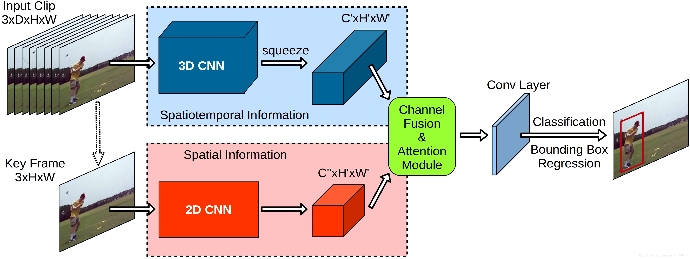
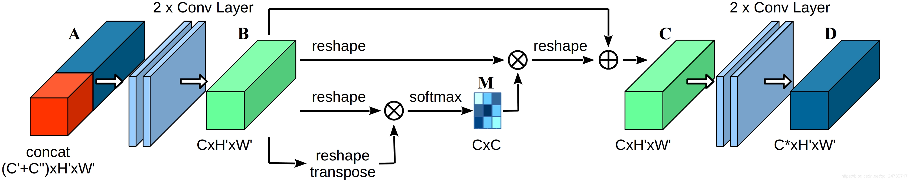
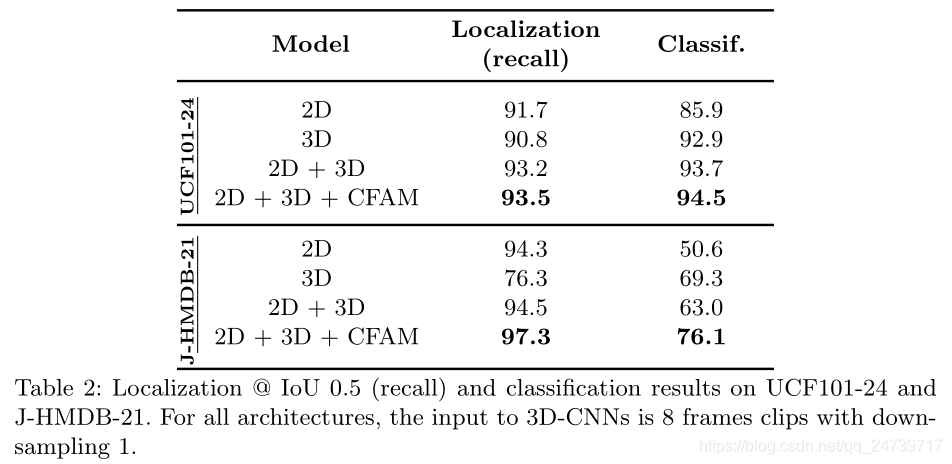
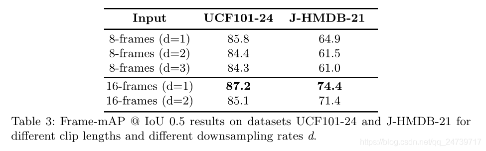
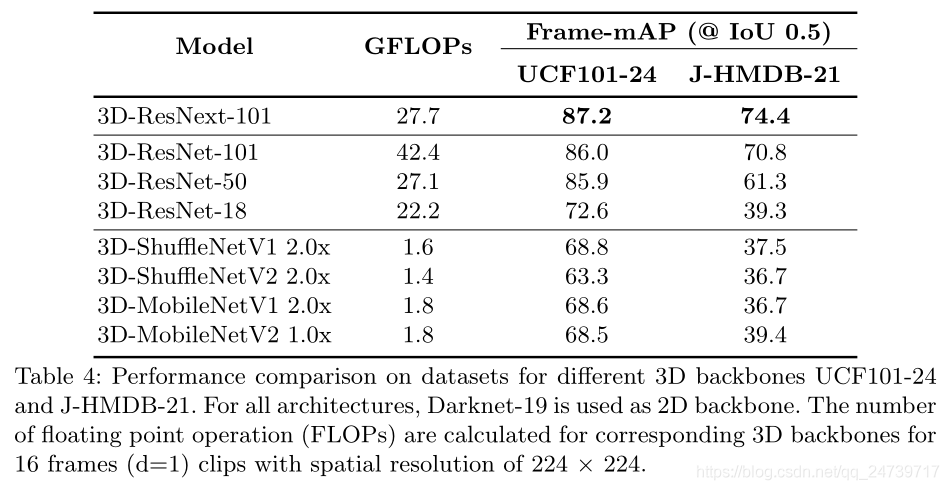
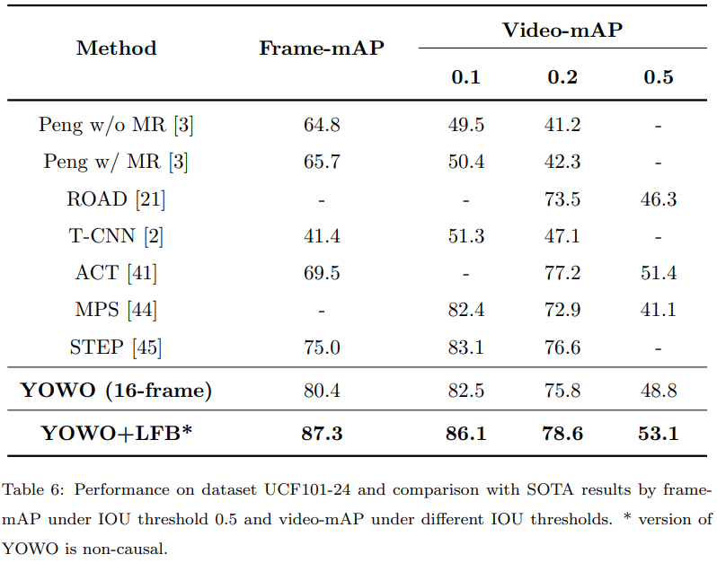
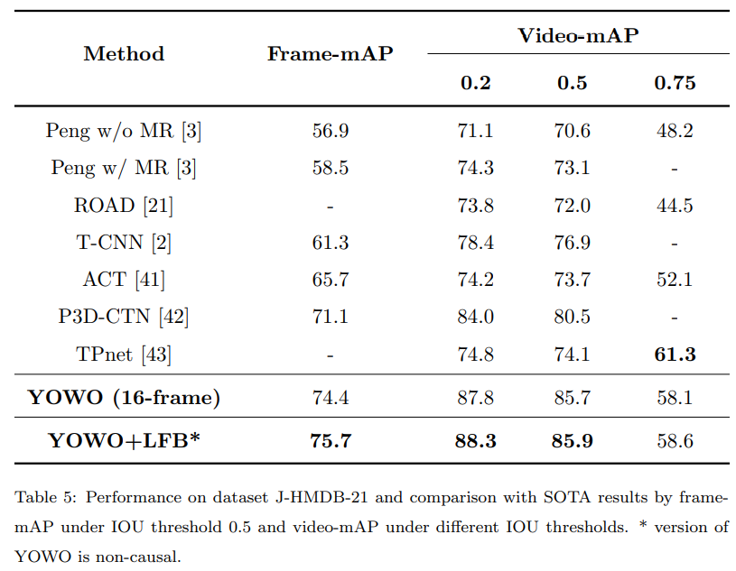
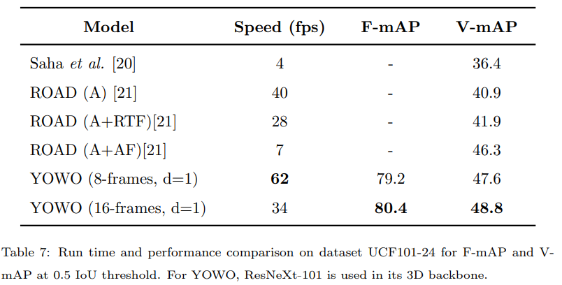
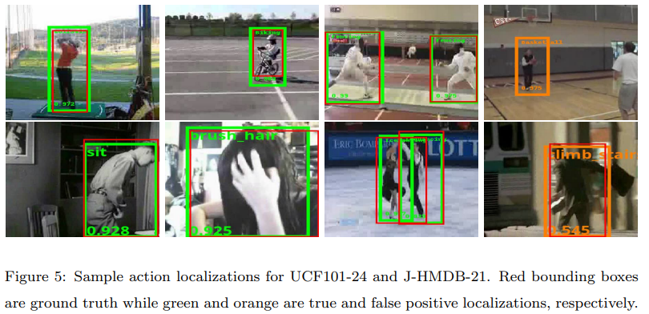

😃
1. 摘要与介绍
YOWO(You Only Watch Once)，使用一个3D卷积和一个2D卷积网络提取时间和空间的特征信息，然后使用CFAM(Channel Fusion & Attention Module)将两者的信息融合，再送入分类网络。YOWO最大支持16帧的短片作为输入，并使用预训练过的3D-CNN提取特征。
主要贡献
(i) 提出了实时的用于视频流时空动作定位的单阶段的框架
第一个同时使用2D-CNN与3D-CNN提取特征的方法，使用通道融合和注意力机制平滑聚合两个分支的特征信息。
(ii) 详细试验了两种网络的效果以及融合机制
(iii) 使用J-HMDB-21和UCF101-24对YOWO进行评估，在两个数据集上各有3.3%和12.2%的frame-mAP的提升。YOWO在16帧和8帧的输入上分别有34fps和62fps的速度。是目前最快的时空动作定位架构
2. 相关工作
基于深度学习的动作检测
灵感来自于2D-CNN残差网络
时空动作定位
使用3D-CNN进行时间特征信息提取。比起2D-CNN，比较耗资源。作者指出，可用的3D-CNN有如下这些，并在github上提供了链接
| 名称 | 参数量 |
|---|---|
| resnext101 | 48.24M |
| resnet101 | 83.29M |
| resnet50 | 44.24M |
| resnet18 | 33.24M |
| mobilenet_2x | 14.10M |
| mobilenetv2_1x | 6.64M |
| shufflenet_2x | 4.78M |
| shufflenetv2_2x | 6.64M |
注意力模块
用于捕获远距离的依赖项，以提升图片分类的性能
3. 方法
3.1. YOWO框架
四个主要部分:3D-CNN分支、2D-CNN分支、CFAM和边界框回归

3D-CNN
默认使用resnext101。
默认输入为连续16帧片段
输出为一个特征图，，是输出通道数，是输入帧数，。
2D-CNN
默认使用Darknet-19
输入是关键帧
输出为一个特征图，，是输出通道数，
通道融合与注意机制(CFAM)

将两个特征图叠在一起
A经过两个卷积层，得到B
将B的每个通道的特征图拉成一维，得到F，
令，G表明了跨通道的特征关联【？】
使用softmax层生成通道注意图M，【？】
其中是衡量第个通道对第个通道影响的分数。在给定特征图的情况下总结了特征的通道间依赖性【？】
令，
将的每个通道的一维向量转换为，得到
最后，为注意力模块的输出，为可训练的参数，从0逐渐学习权重。
边界框回归
遵循和YOLO的边界框回归相同的准则。使用的卷积核生成所需的输出通道数。对于上的每一个像素点，使用k均值方法在相应的数据集上选出5个预选框，每个预选框伴随着个类别的动作分数，同时有4个坐标值和1个置信度，所以最后的输出形状为，然后基于这些锚点优化边界框回归。
3.2. 实现细节
3D网络使用了在Kinetics上预训练的模型作初始化，2D网络则是用PAS-CAL VOC预训练的模型。初始的学习率是0.0001，在30k，40k，50k，60k次迭代时乘上0.5。在UCF101-24上，训练会在5个epoch后完成，而J-HMDB-21则是在10个后。作者是用了一个Nvidia Titan XP GPU完成训练的。
由于J-HMDB-21比较小，作者将3D网络的参数都冻结了，加速收敛，减小过拟合的风险。在两个数据集上，使用水平翻转、随机缩放、随机裁剪进行数据增强。测试时，只有置信度大于0.25的检测边界框会被选出来，然后使用阈值为0.4的非极大值抑制算法进行后处理。
3.3. 链接策略
每帧上的行为检测已经给出了边界框，接下来就是将框在时间上连接起来。假设和分别是连续帧和中的两个区域，那么类别的链接分数定义如下：
其中和是区域的类特殊得分(class specific score)，是两个区域的交并比(IoU)，和是两个标量。如果，；不然为0。考虑到了两个连续帧的分数的戏剧性的变化，实验中把它加进来可以提高检测性能。在所有链接分数计算完成之后，使用Viterbi algorithm寻找最优的路径，来生成动作管。【？】
3.4. 长期特征池(Long-Term Feature Bank)
作者为3D骨干网络在不同时间戳所提取的特征建立了一个Bank。在推理的时候，集中在关键帧的3D特征会被计算出一个平均值，而特征图会作为CFAM的输入。池子里的特征会被预训练的3D resnext101骨干网络提取出来，做成不重叠的8帧片段。【？】
4. 实验
4.1. 数据集与评估矩阵
UCF101-24是UCF101的子集，包含24个动作类别和3207个视频，并提供了相应的注解。每个视频有可能包含多个动作实例，类标签相同而时空边界不同。
J-HMDB-21是HMDB-51的子集，包含928个生活短片，21个动作类别。每一个帧只有一个动作。
评估矩阵参照PASCAL VOC 2012 metric，frame-mAP衡量每一帧检测的精度-召回曲线(precision-recall curve)下方的区域。video-mAP注重动作管。如果在整个视频上，平均每帧与groundtruth的IoU大于阈值，同时动作标签正确预测，那么检测管道就认为是正确的。
4.2. 消融实验
不同架构
在2D，3D，2D+3D，2D+3D+CFAM上分别实验，并进行对比。给出了一些数据，证明YOWO架构的优越性。2D注重空间定位，而3D考虑了时间信息，在动作分类上更好，注意力模块则使得2种特征更合理地混合。

不同的短片帧数与下采样率
在8帧短片上对比下采样率分别为1，2，3的情况；在16帧上对比下采样率分别为1，2的情况。结论是帧数为16的好于8，因为包含更多时间信息；在上述范围中，高下采样率会降低性能。作者推断下采样妨碍了模型正确地捕获动作模式，且太长的序列会打破时间上的上下文联系。尤其是比较快的动作，可能有一些不相关序列成了干扰。

不同的3D骨干网络
更强的骨干网络效果更好

4.3. 技术对比



4.4. 缺点
- 在动作发生之前就判断动作。如第一排最后一张，人物并未投篮。
- 需要一定长度的帧来获取时间信息，帧数太短会导致误判。如最后一张，识别成爬楼梯而不是跑步。
